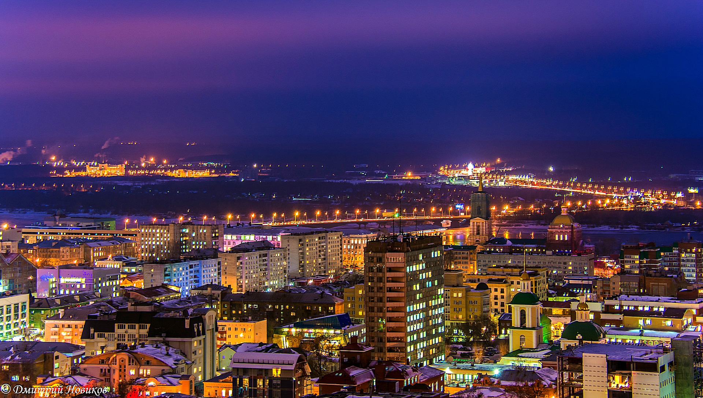
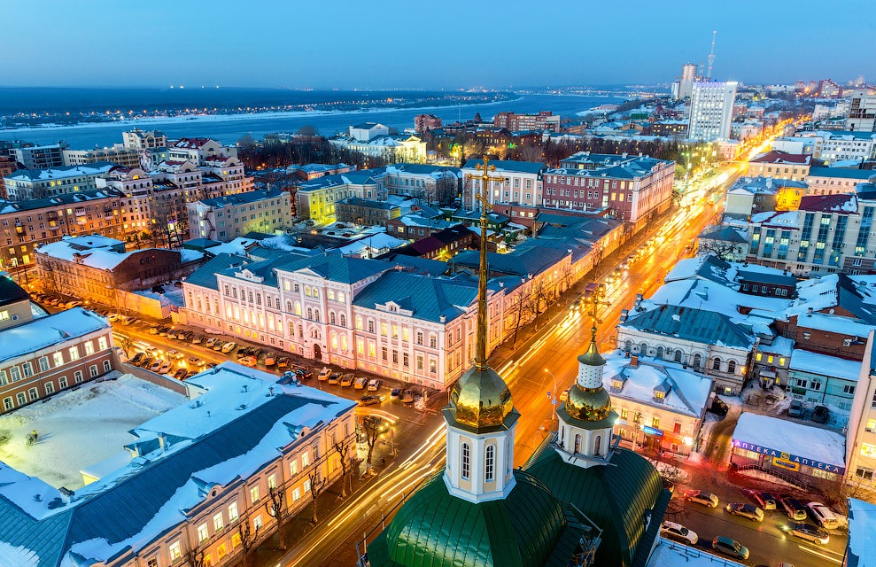
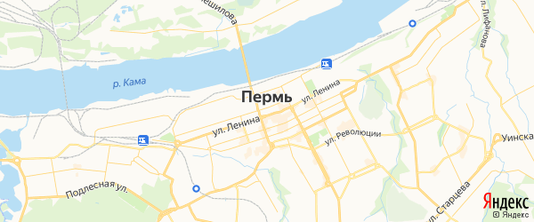

Пермь

Пермь — город на востоке европейской части России, в Предуралье, на берегах реки Камы, ниже впадения в неё реки Чусовой, административный центр Пермского края и Пермского района, транспортный узел на Транссибирской магистрали, речной порт, имеет статус города краевого значения и городского округа.

Крупный многоотраслевой промышленный, научный, культурный и логистический центр Урала. Население — 1 053 938 чел. (2019). Город основан в 1723 году, в 1940—1957 годах назывался Мо́лотов.

Город Пермь расположен на востоке европейской части России, на берегах реки Камы, к югу от устья реки Чусовой. Протяжённость Камы в пределах городской черты Перми составляет около 60 км (от устья р. Ласьвы до устья ручьёв Азово и Глушата — правых притоков Камы). Благодаря Каме, Пермь связана водными путями с пятью европейскими морями: Каспийским, Белым, Чёрным, Азовским и Балтийским. Площадь территории Перми составляет примерно 800 км².